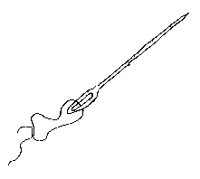

|
Jèrriais |
Angliais |
|
broder |
to embroider |
|
couôtre |
to sew |
|
dêcouôtre |
to rip a seam |
|
dêteindre |
to fade |
|
èrdoublié |
lined |
|
eune aidgulle |
needle |
|
eune brodeuse |
embroideress |
|
un dée |
thimble |
|
eune doublieuse |
lining |
|
eune pouchette |
|
|
eune ruche |
frill |
|
fouôrré |
fur-lined |
|
gaûfrer |
to patch |
|
la brod'die |
embroidery |
|
la chitchette |
rag |
|
la couôtuthe |
needlework |
|
la couôtuthiéthe |
dressmaker |
|
la fale d'eune c'mînse |
shirtfront |
|
la manche |
sleeve |
|
la mèrchéthie |
haberdashery |
|
la mode |
fashion |
|
la mousselinne |
muslin |
|
la r'vêche |
ratteen |
|
la saluette |
peak |
|
la sarge |
serge |
|
la sèrpiliéthe |
sacking |
|
lé bouton |
button |
|
lé dgêne |
denim |
|
lé kaki |
khaki |
|
lé matériel |
material |
|
lé rapiéchage |
patchwork |
|
lé rayon |
rayon |
|
lé riban |
ribbon |
|
lé rouffl'ye |
ruff |
|
lé satîn |
satin |
|
l'êtoffe |
material |
|
l'oeuvre |
knitting |
|
l'ouôlet |
hem |
|
mangi des vèrs |
motheaten |
|
ouvrer |
to knit |
|
pliain et damâsé |
plain and purl |
|
pliutcheux |
fluffy |
|
rampader |
to restuff |
|
r'couôtre |
to sew up |
|
s'enlachi |
to entwine |
|
stichi |
to stitch |
|
un cliu |
patch |
|
un hâsif |
needlecase |
|
un patron |
pattern |
|
un plié |
pleat |
|
un plotîn |
pincushion |

Viyiz étout: